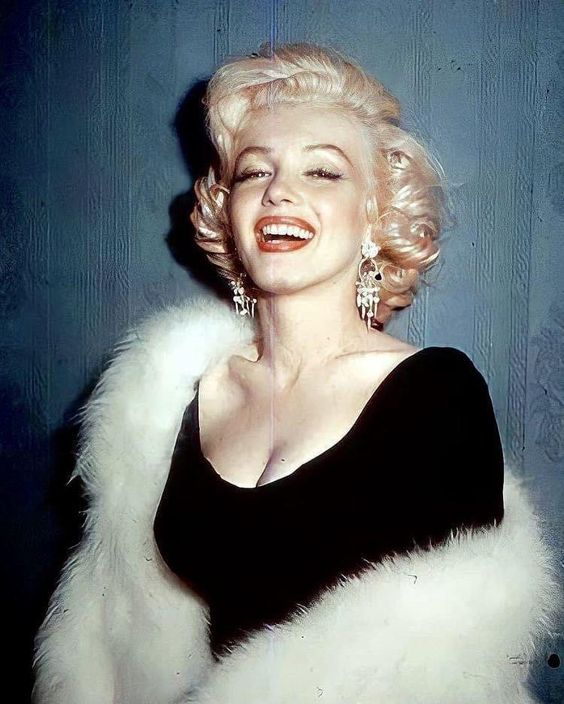

Мэрилин Монро, урождённая Норма Джин Мортенсон, родилась 1 июня 1926 года в Лос-Анджелесе, Калифорния. Выросшая в бедности и детских домах, она прошла долгий путь к славе. Её ранняя карьера началась в качестве модели, но в 1940-х годах её талант и обаяние привлекли внимание Голливуда. Стремительно превратившись в одну из самых известных актрис своего времени, Монро завоевала признание благодаря своим комедийным ролям, как в фильмах "Джентльмены предпочитают блондинок" (1953) и "Зуд седьмого года" (1955). Несмотря на успех, личная жизнь Мэрилин была полна трудностей. Три брака, включая её известные союзы с бейсболистом Джо Ди Маджио и драматургом Артуром Миллером, не были успешными. Внутренние тревоги, депрессия и постоянное давление со стороны Голливуда оставляли след на её эмоциональном состоянии. Её образ стал символом женственности и гламура. Монро стала культурным феноменом, её стиль, манера речи и улыбка оставили неизгладимый след в поп-культуре. Однако за фасадом успешной актрисы скрывалась уязвимая личность, страдающая от одиночества и неуверенности. Её смерть в 1962 году от передозировки снотворного потрясла весь мир и породила множество теорий о её уходе. Мэрилин Монро продолжает вдохновлять миллионы людей, оставаясь иконой киноиндустрии и символом женской красоты.